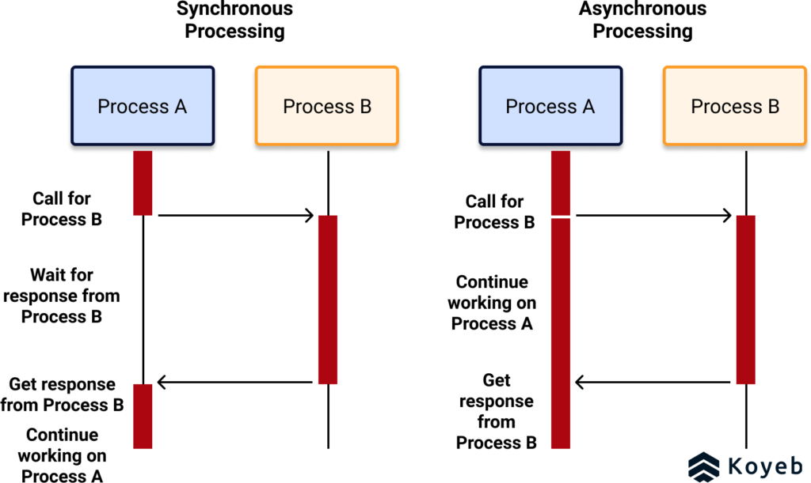

Introduction.
In was annonced and released as open-source language in end of 2009.
Go or Golang was invented in 2007 at Google by three men Robert Griesemer, Rob Pike, and Ken Thompson.
Since 2012-2013 It started to take more amd more popularity as simple and power language on the same time. This is light as script language but it is real complier. Many fresh and not only fresh developers don’t realy realize compiler advantage vs interpritator. You see error in runtime not in compile time . I spent a lot of time in Python and Java Script, Bash and other looking for a error like this method doesn’t exist or missing parameter or other one.
[Running]
python -u “c:\PythonPrograms\OOP\commandPattern.py”
Traceback (most recent call last):
File “c:\PythonPrograms\OOP\commandPattern.py”, line 50, in <module>
add(10,5)
TypeError: add() takes 1 positional argument but 2 were given
[Done]
exited with
code=1
in 0.107 seconds
This example is simple and to find error is easy it can take a few seconds my be two minutes after 10-11 hours working day.
Starting
Most articles start to explain about language from command line. I am personaly don’t think it is good idea . I would say it clumsy idea, because you need to spend more time on the first steps. I am strongly recommend use IDE . Two best are Intelij IDEA and Visual Studio Code. If you are not familiar with basical issues I am strongly recomend to do it . I am going to talk about few language details.
Asynchronous programming
Golang is sutable for asynch programming only . There is no possible to create thread like in Java , C/C++ or any others
for C++ it looks
public class UserThread extends Thread {
public void run() {
System.out.println("This code is running in a thread");
}
}
Another way to create a thread is to implement the Runnable interface:
public class Main implements Runnable {
public void run() {
System.out.println("This code is running in a thread");
}
}
int main() {
std::cout << "Hello, World!";
return 0;
}
And in C++
#include <iostream>
#include <thread>
#include <chrono>
// A function that the new thread will execute
void thread_task() {
std::cout << "Hello from the new thread!" << std::endl;
// Sleep for a moment to ensure the main thread waits
std::this_thread::sleep_for(std::chrono::milliseconds(10));
std::cout << "New thread finishing." << std::endl;
}
int main() {
std::cout << "Main thread started." << std::endl;
// Create a new thread and pass the function pointer
std::thread newThread(thread_task); // The new thread starts running immediately
std::cout << "Main thread continuing..." << std::endl;
// Wait for the new thread to finish execution
newThread.join();
std::cout << "Main thread finished." << std::endl;
return 0;
}Your thread is managed by OS kernel which decide to suspend it or resume. This is named blocking. In Golang we do it like here
package main
import (
"fmt"
"time"
)
func f(from string) {
for i := range 3 {
fmt.Println(from, ":", i)
}
}
func main() {
f("direct")
go f("goroutine")
go func(msg string) {
fmt.Println(msg)
}("going")
time.Sleep(time.Second)
fmt.Println("done")
}
You can see it very easy just add go identificator. But this is not blocking any resource and your thread is not going to sleep see in the picture

That why and this not only one goland is not a good choice for large enterprise system. The laguage does't support enhiriatance and it doesn't have class like in OOP language it much more similar to C with pointer to function than in Java or C++
import "fmt"
// 1. Base Struct (The "parent" features)
type Animal struct {
Name string
Age int
}
// Method for the base struct
func (a Animal) Introduce() {
fmt.Printf("Hello, my name is %s and I am %d years old.\n", a.Name, a.Age)
}
// 2. Composed Struct (The "child" features)
// Dog embeds Animal by simply listing the type (Animal) within its definition.
type Dog struct {
Animal // <-- This is the embedding. Dog now "inherits" Name, Age, and Introduce().
Breed string
}
// 3. Shadowing/Overriding (Polymorphism)
// We can define a method on Dog with the same name as an Animal method.
// This is not true overriding, but the Dog's method takes precedence.
func (d Dog) Introduce() {
// We can call the base (embedded) method explicitly if needed:
// d.Animal.Introduce()
fmt.Printf("Woof! I'm %s, a %s, and I love treats!\n", d.Name, d.Breed)
}
func main() {
// Create a Dog instance.
// We can initialize the embedded fields directly.
myDog := Dog{
Animal: Animal{
Name: "Buddy",
Age: 5,
},
Breed: "Golden Retriever",
}
// Access inherited fields directly:
fmt.Printf("Dog's age: %d\n", myDog.Age)
// Call the Dog's method (the overridden/shadowed method):
myDog.Introduce() // Output: Woof! I'm Buddy, a Golden Retriever, and I love treats!
// We can also access the Animal's method directly if we need the original behavior:
myDog.Animal.Introduce() // Output: Hello, my name is Buddy and I am 5 years old.
}
Ke
Instead of hidden this parameter in each Java or C++ method you shoud define it directly after function body func (d Dog) Introduce().
Golang has also very limited interface usage mechanism your class needs implicitly satisfies to the interface
package main
import "fmt"
// 1. Define the Interface
// An interface defines a set of methods that a type must implement.
type Speaker interface {
SayHello() string // Required method: takes no arguments, returns a string
}
// 2. Concrete Type 1: Human
type Human struct {
Name string
}
// Human implicitly satisfies the Speaker interface because it provides the SayHello() method.
func (h Human) SayHello() string {
return fmt.Sprintf("Hello, my name is %s!", h.Name)
}
// 3. Concrete Type 2: Dog
type Dog struct {
Name string
}
// Dog implicitly satisfies the Speaker interface because it provides the SayHello() method.
func (d Dog) SayHello() string {
return fmt.Sprintf("Woof! I'm %s, the dog!", d.Name)
}
// 4. A general function that accepts the Interface
// This function doesn't care if it's a Human or a Dog; it only cares that the input
// implements the SayHello() method.
func Greet(s Speaker) {
message := s.SayHello()
fmt.Println(message)
}
func main() {
// Create instances of our concrete types
alice := Human{Name: "Alice"}
buddy := Dog{Name: "Buddy"}
// 5. Polymorphism in action:
// We can call the same Greet function with completely different types.
fmt.Println("--- Calling Greet Function ---")
Greet(alice) // Greet treats Alice as a Speaker
Greet(buddy) // Greet treats Buddy as a Speaker
// 6. Creating a slice of Interfaces
// A slice of type []Speaker can hold any type that satisfies the Speaker interface.
speakers := []Speaker{
alice,
buddy,
Human{Name: "Charlie"}, // Can mix types freely
}
fmt.Println("\n--- Looping Through Interface Slice ---")
for _, speaker := range speakers {
// We can call the interface method directly on the element
fmt.Println(speaker.SayHello())
}
}
There is also missing reflection mechnism. But on other way development could be easy for some futures because you don't need to use maven/gradle . However in this case
package main
import "fmt"
// 1. Define the Interface
// An interface defines a set of methods that a type must implement.
type Speaker interface {
SayHello() string // Required method: takes no arguments, returns a string
}
// 2. Concrete Type 1: Human
type Human struct {
Name string
}
// Human implicitly satisfies the Speaker interface because it provides the SayHello() method.
func (h Human) SayHello() string {
return fmt.Sprintf("Hello, my name is %s!", h.Name)
}
// 3. Concrete Type 2: Dog
type Dog struct {
Name string
}
// Dog implicitly satisfies the Speaker interface because it provides the SayHello() method.
func (d Dog) SayHello() string {
return fmt.Sprintf("Woof! I'm %s, the dog!", d.Name)
}
// 4. A general function that accepts the Interface
// This function doesn't care if it's a Human or a Dog; it only cares that the input
// implements the SayHello() method.
func Greet(s Speaker) {
message := s.SayHello()
fmt.Println(message)
}
func main() {
// Create instances of our concrete types
alice := Human{Name: "Alice"}
buddy := Dog{Name: "Buddy"}
// 5. Polymorphism in action:
// We can call the same Greet function with completely different types.
fmt.Println("--- Calling Greet Function ---")
Greet(alice) // Greet treats Alice as a Speaker
Greet(buddy) // Greet treats Buddy as a Speaker
// 6. Creating a slice of Interfaces
// A slice of type []Speaker can hold any type that satisfies the Speaker interface.
speakers := []Speaker{
alice,
buddy,
Human{Name: "Charlie"}, // Can mix types freely
}
fmt.Println("\n--- Looping Through Interface Slice ---")
for _, speaker := range speakers {
// We can call the interface method directly on the element
fmt.Println(speaker.SayHello())
}
}
Now I hope this article and the examples clearly demonstrate that Golang is a lightweight, practical language designed for rapid development, while Java continues to lead in large-scale enterprise systems.